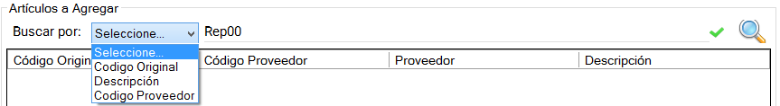

1. Para buscar el artículo a agregar podemos seleccionar el criterio de búsqueda y
descripción parcial o completa del mismo en 
Una vez seleccionado el criterio e indicada o no la descripción hacemos click o damos
enter para obtener todos los artículos en la grilla debajo del buscador.
2.Seleccionamos el artículo a agregar y vemos el detalle del artículo seleccionado en 
Debemos indicar la cantidad de artículos a agregar al pedido y dar click en el botón  .
. TOPIC:Si
deseamos agregar 1,2,5 o 10 artículos,
podemos dar botón derecho sobre el artículo y seleccionamos la opción definida.